Kimi K3 刚开源，外网上就有大佬把它扒了个底朝天。
大佬 Baseten 花了48小时，40 罐气泡水，把 K3 的建模代码从头到尾拆了一遍，最后整理出一条长达七年的技术暗线。
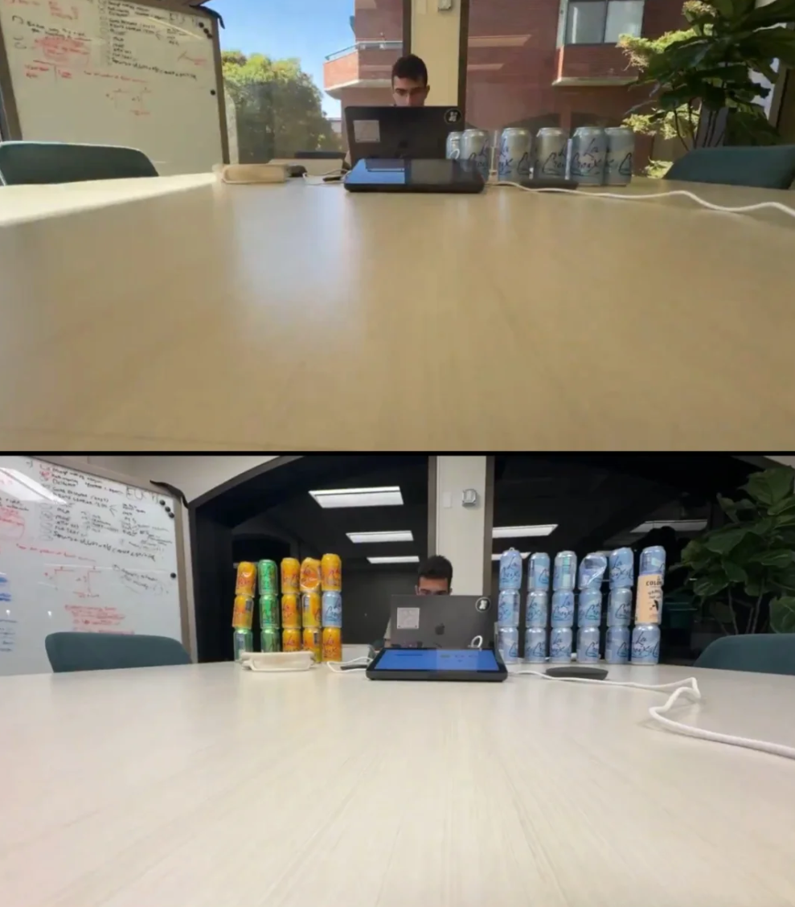
先抛一个最震撼的对比：
2019 年横空出世的 GPT-2，放到今天，K3 一个模型的参数量，足足抵得上 22580 个 GPT-2。
Kimi 花了七年，把模型从 1.24 亿参数推到 2.8 万亿参数，才走到今天这套架构。
但这个帖子真正值钱的地方，是讲清楚了一件事：这两万多倍，根本不是堆参数堆出来的。
他梳理的脉络非常清晰：
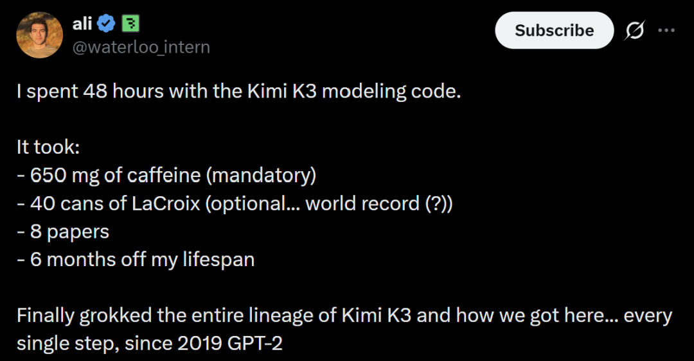
Ali 分享了整套架构变迁的过程，下面我们就沿着他的思路，具体看一看模型参数增长22580倍的背后，架构究竟发生了哪些变化。
一、Kimi 入场前，模型如何处理记忆
2019年， GPT-2 只有1.24亿参数，但已经确定了后来大模型最常见的工作方式：读入前面的文字，再一个 Token、一个 Token 地预测后面的内容。
GPT-2 预测下一个 Token 的完整流程图：
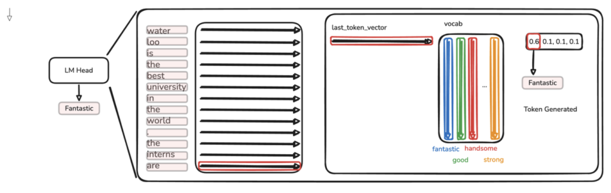
从图里可以看到，每生成一个新 Token，模型都必须把前文重新计算一遍，文章越长，重复计算就越多。
为了解决这个问题，模型开始使用 KV Cache，把已经读过的内容缓存起来。
每生成一个新 Token，模型只需要计算它自己的 K 和 V，再把它们接到原来的缓存后面，不必从头处理全部历史，流程如图所示：
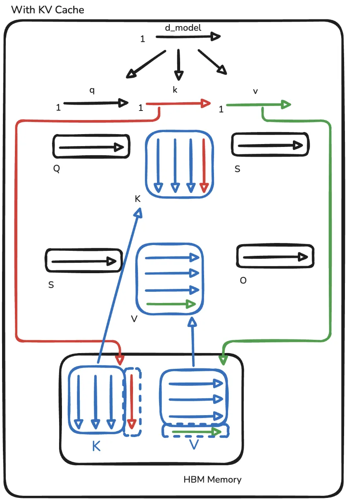
作者展示了带有past_kv的注意力代码，其中最关键的是下面几行：
这样虽然省掉了重复计算，但缓存会随着上下文不断增长，显存的压力也越大。
2020 年，线性注意力机制出现。它不再把前面每个 Token 全部保存下来，而是把读过的内容压缩进一块固定大小的记忆中。
线性注意力更新记忆的核心代码：
这里的S就是模型维护的固定大小记忆。每读到一段新内容，模型都会把新的 Key 和 Value 写入S，随后再用Query 从中读取信息。
这样一来，无论上下文变得多长，模型都不需要保留一份不断增长的KV Cache，长文本处理成本也随之降低。
但线性注意力也有自己的问题，因为所有新信息都会不断写进同一块有限的记忆中，时间一长，新旧内容就容易相互干扰。
为了解决这种干扰，DeltaNet 出现了。它不再直接把新信息叠加到旧记忆上，而是先读取当前位置已经保存的内容，再计算新旧信息之间的差值，只写入真正需要修改的部分。
DeltaNet 的核心更新代码：
其中，v_old代表模型从旧记忆中读出的内容，v - v_old就是新旧信息之间的差值。模型最后写回去的不是完整的新信息，而是经过beta控制的修正量。
线性注意力与 DeltaNet 更新方式的对比图：
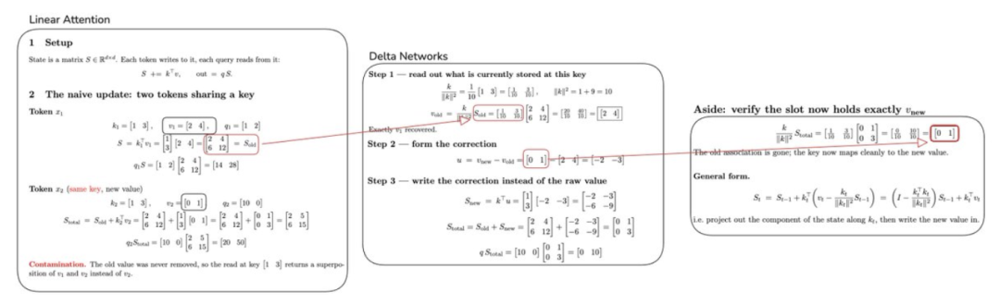
左侧展示的是线性注意力机制，当两个 Token 使用相同的 Key 写入不同信息时，新旧内容会直接叠加，最终造成记忆污染。
中间展示的是 DeltaNet 的处理过程，先读取旧值，再计算修正量，最后把原来的信息替换成新的信息。
右侧则验证了更新结果，旧内容已经被清除，当前位置只保留新的Value。
不过，DeltaNet 需要按照 Token 顺序一步步修改记忆，这种串行计算方式并不适合 GPU 。为了把它真正用在更大的语言模型上，人们又对计算方式进行了重新设计，把连续Token分成多个小块，让一整块内容可以并行处理。
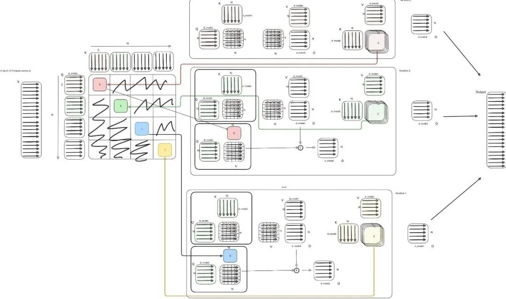
到2024年，这套机制已经被扩展到 13 亿参数的模型，并在 1000 亿 Token 的数据上完成训练。
但 DeltaNet 仍然缺少一种能力：主动遗忘。
它可以在出现新信息时修改某一条旧记录，却无法主动清理一批已经过时的内容。
比如对话已经从旅游计划转向公司财报，原来保存的酒店、机票和景点信息可能已经没有用了，但 DeltaNet 只能等到相关的新内容出现后，再逐条进行替换。
于是，Gated DeltaNet 又在原来的基础上加入了一个“遗忘开关”。
Gated DeltaNet 如何更新记忆：
其中，v_old 是模型从旧记忆中读出的内容，u 是根据新旧差异计算出的修正量。最关键的变化出现在最后两行：模型先用 alpha * S 衰减旧记忆，再把新的修正量写回去。
当 alpha 接近 1 时，旧记忆大部分会继续保留；当 alpha 接近 0 时，旧记忆会被大幅削弱，为新的内容腾出空间。
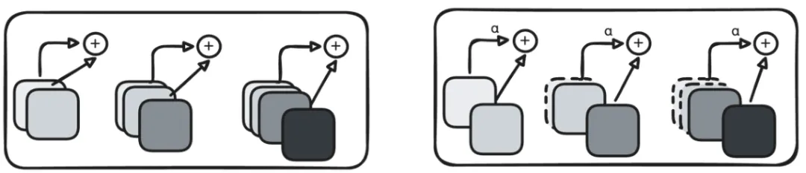
这样，即使没有新信息来逐条替换旧内容，模型也能主动让整块旧记忆逐渐淡出。
发展到这里，模型已经学会了写入、修改和遗忘。
不过，这个遗忘开关也只能统一削弱整块记忆，无法精确控制哪些信息该留下、哪些该忘掉。
也就是说，随着大模型开始处理百万 Token 上下文和更复杂的 Agent 任务，这种“一刀切”的遗忘方式已经不够用了。
二、Kimi 重新设计记忆系统
Kimi 在 Gated DeltaNet 的基础上，提出了 Kimi Delta Attention（KDA）。
它最大的变化，是把原来统一控制的“遗忘开关”，拆成了许多独立开关。
这是作者展示的DeltaNet、Gated DeltaNet到KDA的门控机制演进图：
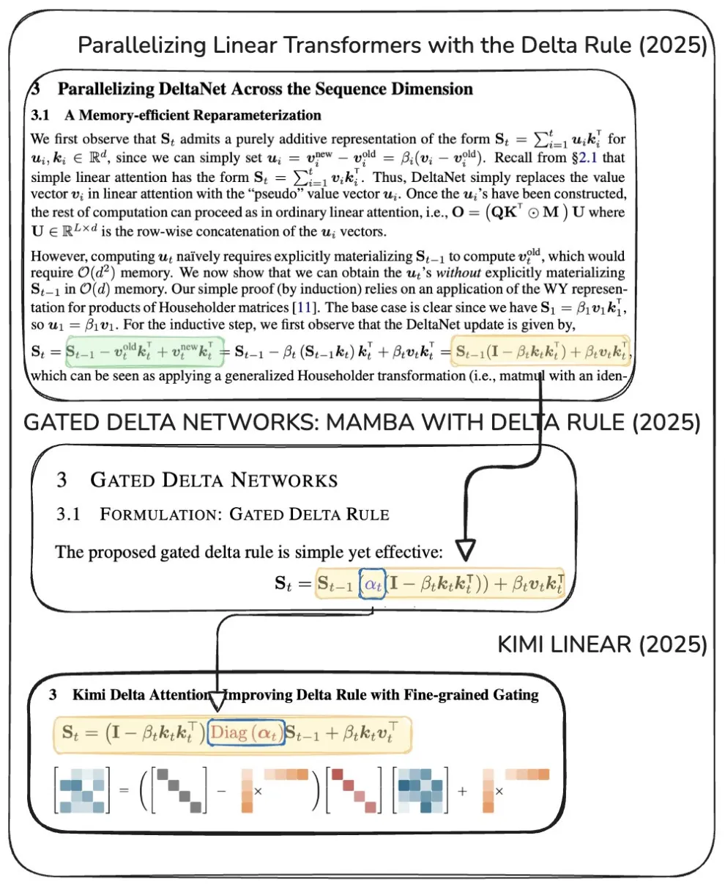
图中的 alpha 从 Gated DeltaNet 里的单一数值，变成了 KDA 中的 Diag(alpha)，也就是从统一控制整块记忆，升级为分别控制不同的记忆通道。
模型可以让一部分记忆快速淡出，同时让另一部分记忆保存更长时间。
比如在分析一份财报时，模型可以长期保留公司的名称、年份和核心指标，同时更快忘掉一些临时性的表达和重复信息。
换句话说，模型开始具备更细致的记忆管理能力。它不只知道什么时候该忘，还能判断具体应该忘掉什么。
下面是作者展示的 Delta Rule、Gated Delta Rule 与 KDA 代码对比：
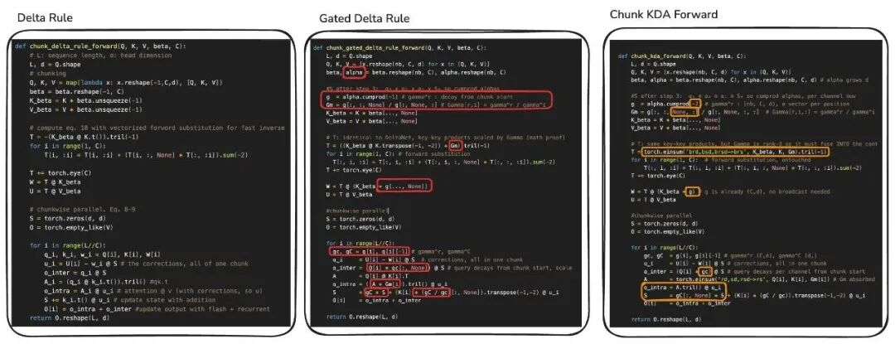
Kimi 官方的实验显示，这种设计在部分任务上的效果可以超过传统的完整注意力，同时还能够明显提高长文本生成速度。
为了验证 KDA，Kimi 团队训练了一款总参数 480 亿、每次激活 30 亿参数的 Kimi Linear 模型，开始进入大规模 MoE 模型阶段。
在 100 万 Token 上下文下，这款模型最多可以减少75%的 KV Cache 占用，解码吞吐量最高达到传统完整注意力的6倍。
但 KDA 依然存在一个先天限制：它会把大量历史信息压缩到固定大小的记忆中。
只要发生压缩，就一定会丢失细节。模型可能记得一段话的大意，却未必能准确找回其中的某个数字、一行代码或者一句原文。
到了 Kimi K3，模型总参数从 Kimi Linear 的 480 亿扩大到 2.8 万亿。
Kimi 却没有把所有希望都押在 KDA 上，而是让 KDA 与传统注意力机制配合工作。
这是作者展示的 Kimi K3 整体架构图，可以看到，模型以三层 KDA 加一层 MLA 组成一个基本循环，并将这套结构重复 23 次。
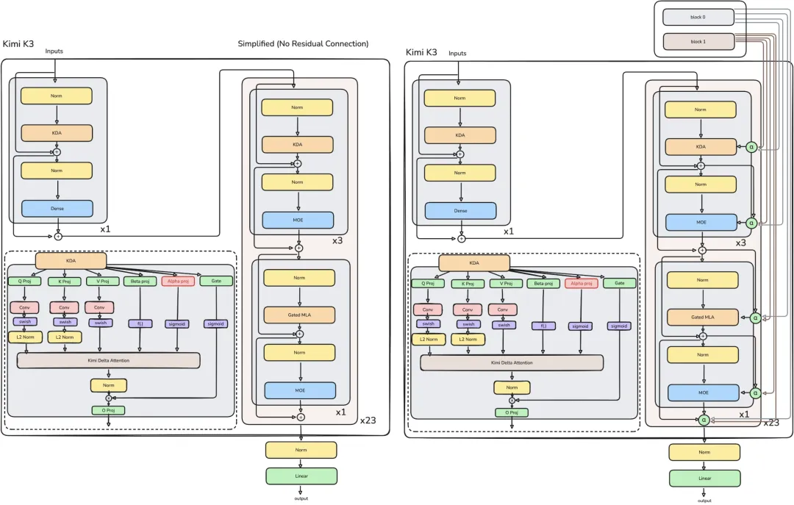
KDA 负责维护一份固定大小的长期记忆。它速度快、成本低，适合记录上下文中的主要信息。
MLA 则会定期回到完整上下文中，重新寻找原始细节。它更像一次精确检索，适合找回具体数字、代码和原文位置。
可以把它们理解成日常工作中的两种方式：
平时只看整理好的会议纪要，快速掌握整体情况；遇到需要确认的数据，再打开原始会议记录查证。
三、网络太深，Kimi K3 如何找回早期信息？
前面提到，Kimi K3 主要以三层 KDA 加一层 Gated MLA 作为基本循环。23 个循环构成 92 层，再加上一层额外的 Gated MLA，最终有 93 个解码器层。
虽然 KDA 和 MLA 解决了模型如何在百万 Token 中保存和找回信息，但这些信息进入模型后，还要在 93 层网络中不断传递。
传统 Transformer 依靠残差连接传递层间信息。每经过一层，模型都会把这一层产生的新结果直接加入已有结果中。层数越深，早期提取出的内容就越容易被后面的内容冲淡。
为了找回这些被稀释的信息，Kimi K3 引入了 AttnRes，也就是“注意力残差”。
AttnRes 会根据当前正在处理的内容，为前面不同阶段的结果重新分配权重，让后面的网络层判断哪些早期信息更值得参考。
例如处理数学问题时，模型可以重新关注早期网络层识别出的公式和条件；处理长文章时，则可以找回前面已经提取出的主题和关键事实。
这是作者展示的 Kimi K3 普通残差连接与 ResAttn 结构对比图：
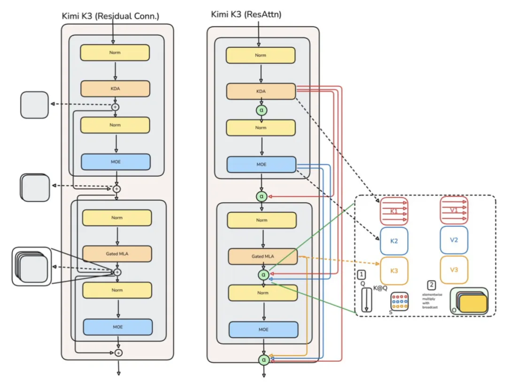
可以看到，左侧的传统残差连接会把前面各层的结果统一累加起来；右侧的 AttnRes 增加了多条跨层路径，并通过图中的 alpha 权重，决定当前网络层应该从前面哪些阶段读取信息。
然而，如果每一层都重新检索此前所有结果，训练和推理成本会非常高。
因此 Kimi K3 采用了分块式 AttnRes：每经过 12 个解码器层，就把这段网络产生的中间结果整理成一个信息块，供后面的网络层重新访问。
93 层网络最终被划分成 8 个 AttnRes 信息块。后面的网络层检索时，只需要在这些信息块之间进行选择，不必逐层查看全部历史结果。
分块式 AttnRes 的核心代码：
其中，V 保存了此前各个信息块和当前信息块的结果，logits 用来计算每个信息块对当前任务的重要程度。经过 softmax 后，这些分数会变成权重，模型再按照权重重新组合前面的信息。
MLA 和 AttnRes一起，解决了两个方向上的信息丢失：
上下文太长时，MLA负责从前文中找回原始细节；网络层数太深时，AttnRes负责调取早期网络层提取出的中间结果。
四、控制计算量
Kimi K3 拥有2.8万亿参数，这么大的模型该如何控制计算量？
K3 采用了更细粒度的专家划分，一共设置 898 个专家，其中 2 个是所有 Token都会调用的共享专家，另外 896 个则由路由器按需选择。
每处理一个 Token，只有 18个 专家真正参与工作，其余专家保持待命。
这种设计让Kimi K3可以继续扩大总参数规模，同时把单个 Token 需要调用的专家控制在很小的范围内。
2.8万亿参数代表模型拥有的总容量，并不意味着每生成一个Token，都要运行全部参数。
另外，K3 还进一步采用了潜在空间 MoE。输入会先被压缩到维度更低的空间，再交给专家网络处理，计算完成后重新投影回原来的维度。
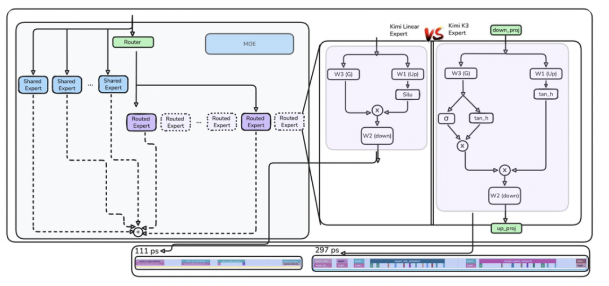
根据原文，这项设计可以让专家网络的 FLOPs 几乎减少一半。Kimi K3 因此可以容纳数量更多、划分更细的专家，同时避免专家规模直接转化成同等幅度的计算成本。
五、总结
回头看这条技术路线，会发现每一次升级都在解决上一种方法留下的问题。
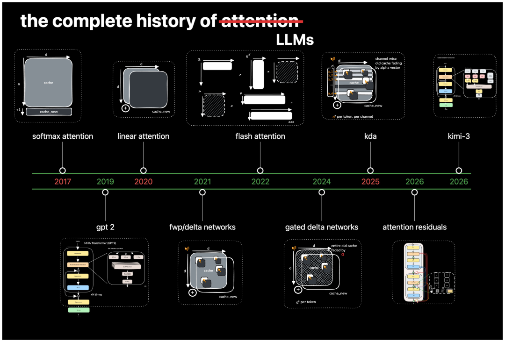
GPT-2使用KV Cache保存前面的所有内容，记得很完整，但上下文越长，缓存就越大。
线性注意力把所有历史压缩进固定大小的记忆，降低了长文本成本，却让不同信息容易互相干扰。
DeltaNet让模型能够修改旧记忆，减少新旧信息之间的冲突。
Gated DeltaNet加入遗忘能力，让模型可以主动清理已经过时的内容。
KDA进一步细化遗忘机制，使不同类型的信息能够拥有不同的保存时间。
MLA定期回到原始上下文，找回压缩记忆中丢失的细节。
MoE把庞大的参数拆分给不同专家，每次只调用与当前内容相关的一小部分。
AttnRes则让模型可以重新读取早期网络层的结果，避免重要信息随着模型不断加深而被稀释。
所以，Kimi K3并不是对传统 Transformer 进行简单放大，它把过去七年里出现的多条技术路线组合起来，才完成了实际能力的跨越。
前沿能力很少由某个孤立的灵感直接催生。
一项论文里的技术方案，需要经过长期验证，还要被放进完整体系中稳定运行，最终才会变成用户真正能够感受到的能力。
这也让大模型竞争的门槛变得更高。单点突破依然重要，真正决定最终差距的，是一个团队能否把不同阶段的研究成果连接起来，再将它们转化成可以规模化运行的系统。
站在更长的时间尺度上看，AI的进步常常显得突然，背后却是多年积累在某个时刻集中成熟。
Kimi K3只是这条规律的一次体现。下一次能力边界的跃迁，大概率也会以类似的方式发生。
技术文章链接：
https://x.com/waterloo_intern/status/2081762065392541951